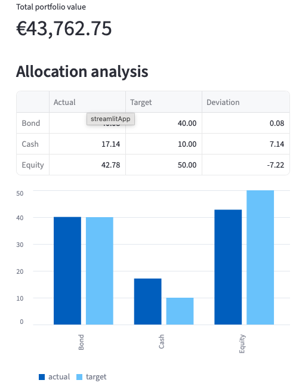
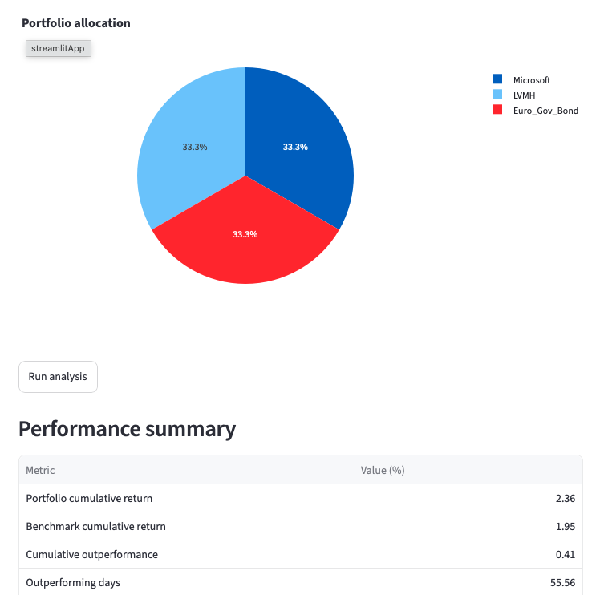

Portfolio Decision Support

A portfolio management application designed to simulate transactions, monitor asset allocation and evaluate their impact before execution.
Launch applicationI am a wealth management professional with six years of experience and a strong interest in programming. I enjoy transforming business needs into practical, understandable and user-friendly digital tools.
My projects combine financial knowledge, problem-solving and software development.
A selection of applications combining financial expertise, programming and practical decision support.

A portfolio management application designed to simulate transactions, monitor asset allocation and evaluate their impact before execution.
Launch application
An interactive application for measuring portfolio performance, comparing results with a benchmark and visualising cumulative returns, volatility and asset allocation.
Launch applicationInterested in my projects or professional background? Feel free to contact me or explore more of my work online.